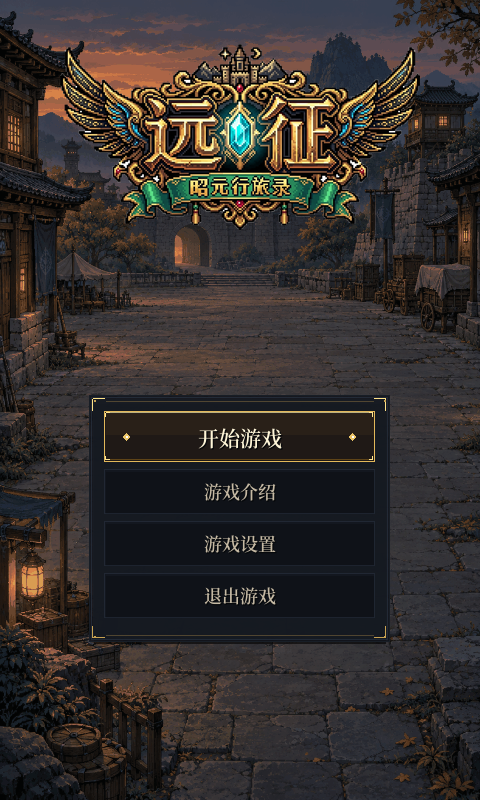
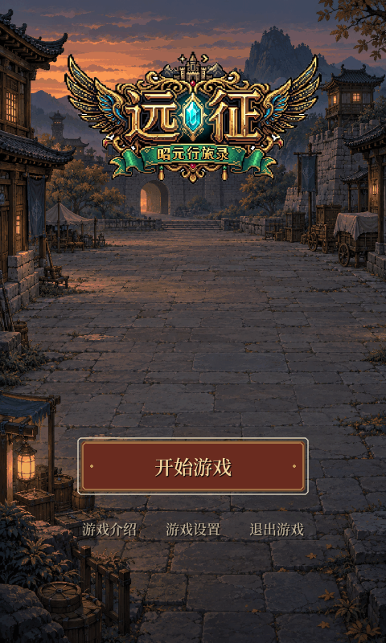
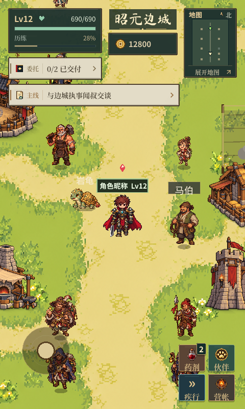
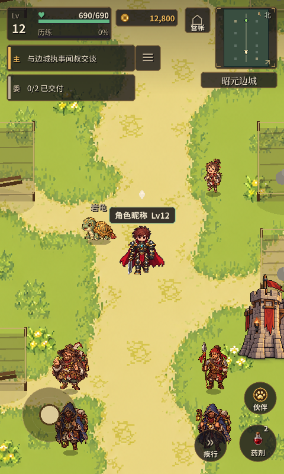

《远征》第一轮 UI · V1
原生 Godot 截图 · 2026-10-09 · 无后期效果
左侧修改前，右侧修改后。旧 Logo 和长屏天空采用方案允许的过渡版本，正式资产仍待制作。手机可横向滑动查看原尺寸。
修改前 · 480×800
修改后 · 480×800
修改前 · 480×800
修改后 · 480×800
每张图片均保留原生尺寸。长屏、安全区、任务、低血量等用演示状态验证。